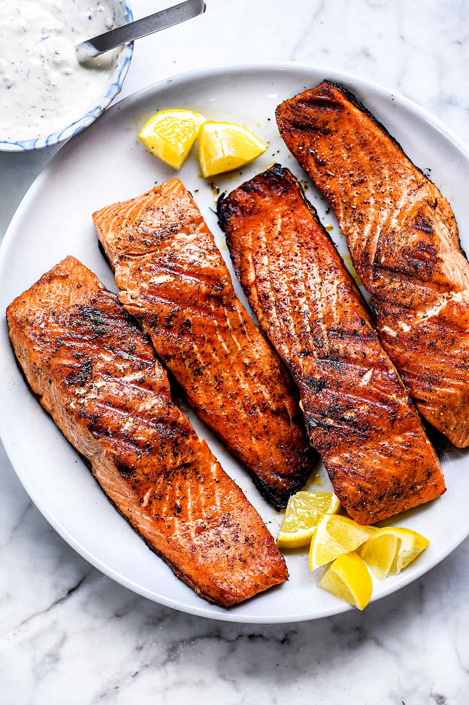

Grilled Salmon
Description: This recipe requires a few simple ingredients and a simple cooking process such as a gas or charcoal grill.
Ingredients
- salmon filets
- salt
- pepper
- butter
- preferred high smokepoint oil
- garlic powder
Steps
- Preseason steak for one hour with salt and pepper
- Crank the grill to as hot as it gets
- Clean then oil the grates
- Sear the salmon evenly on both sides until the internal temperature is 120
- Medium-Rare is the only proper temperature, discard any guests who ask for anything else
- Remove from grill, cover adding a dolup of butter and several dashes of garlic powder
- Let rest 5-6 minutes then serve